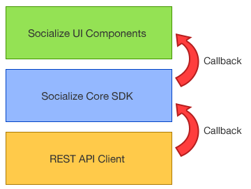
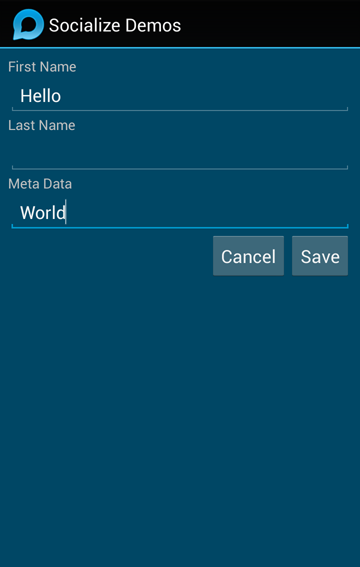

Extending Socialize¶

|
Advanced Use
|
Architecture¶
The Socializd SDK is designed around a tiered structure so that developers can easily alter or enhance how their users interact with the Socialize system.

The Socialize UI Components provided in the SDK call the Socialize Core SDK in exactly the same manner as any external developer would so you can easily replace the UI components shipped with the SDK with your own variations.
In addition each layer of the design includes a set of callbacks (listeners) to allow developers to integrate their features and/or intercept calls made within the SDK.
Use Cases & Best Practices¶
There are several legitimate reasons why a developer might want to extend the Socialize framework:
- The developer wants to implement their own UI controls to create a completely custom look-and-feel
- The developer wants to make slight adjustments to the existing UI for which the default configuration options do not allow
- The developer wants to provide completely new functionality or integrate other services into the framework
By far the most common use case is the first in this list. Creating a completely custom UI is one of the most requested features of the Socialize SDK.
Although some customization is provided within the ActionBar (Refer to Customizing the Action Bar) a complete re-imagining of the UI experience requires a slightly more comprehensive approach.
Best Practice for UI Customization¶
If the configuration options provided in the standard Socialize SDK are insufficient for your needs we recommend you create your own UI elements and replace the default ones provided by Socialize. This is a 4 step process:
Note
The following applies to Android implementations. Differences may apply for other platforms.
See the Customizing a View - Working Example section at the bottom of this page for an example.
Step 1 - Declare your UI in a layout XML file¶
All of the UI default components in the Sociaize SDK for Android are created programmatically [1], however it is not necessary to define your own UI views in this way.
Simply define your view as an XML layout file and you can use this view in place of the Socialize view.
Step 2 - Create an Activity to house the layout¶
All Views on Android must be housed in an Activity (or another View). In the most basic implementation the user action that launches the UI view will be changed to launch your activity.
Step 3 - Override the default behaviour for user actions (where required)¶
If you are not planning to override all of the Socialize UI (i.e. only part of it) but you want to insert your own UI elements into the normal flow (e.g. you want to keep the action bar, but change the comment list) you can simply use the callback listeners provided in the SDK to override the default click action triggered by the Socialize UI components.
Step 4 - Implement the user actions taken from your UI using the Core SDK¶
Once you have your UI and have bound the user actions you can then just call the Socialize Core SDK in the same way the Socialize UI components do.
See the Customizing a View - Working Example section at the bottom of this page for an example, and/or refer to the Socialize Core SDK Guide section for details on calling the Socialize Core SDK.
Generic SDK Enhancement¶
If there is an area of the SDK that you need/want to behave differently, and you feel that the changes you need are not specific to your app, we strongly encourage you to follow the commonly adopted approach to open source contributions:
- Fork the socialize-sdk-android repository on github (https://github.com/socialize/socialize-sdk-android)
- Make the changes you require on your forked repo, being careful to ensure the changes are done in a generic manner
- Submit a Pull Request so we can review the changes and look to incorporate them into the product
The open source community depends largely on contributions to make it better. If you feel there is something missing from the product, don’t be afraid to add it and let us know!
Things to avoid¶
“With great power comes great responsibility” [2]. When working with the Socialize SDK at a source code level there are some common pitfalls of which one should be mindful:
Avoid changing Socialize code in your local copy¶
When you have the source code in front of you it’s tempting to simply make whatever changes you believe are required to suit your needs directly on the source tree of your local copy of Socialize. This should be avoided in preference to forking the repository, making changes in a generic way and submitting a pull request. As Socialize releases new versions of the SDK with bug fixes, enhancements and new features it will become increasingly difficult to merge these changes into your modified version of the source tree.
Avoid partial changes to Socialize UI elements¶
Customizing the UI is best done as an “all or nothing” affair. That is, even if you want a look-and-feel that is only slightly different to that provided by Socialize, we recommend you re-implement the entire UI in your own XML layout where possible as opposed to extending the Socialize classes and making intimite modifications to how UI components are created.
Where possible Socialize will always retain the public method signatures of a class, and deprecate methods long before they are removed, however we make no guarantees about the consistency of implementation within methods. Altering the behavior of a sub-set of methods on a class that extends a Socialize class may lead to unexpected errors as new versions of the SDK are released.
Customizing a View - Working Example¶
The Socialize Demo app contains an example of a complete replacement of the Profile View accessed from the comment list.
Following the steps decsribed above:
Step 1 - Declare your UI in a layout XML file¶
<?xml version="1.0" encoding="utf-8"?>
<LinearLayout xmlns:android="http://schemas.android.com/apk/res/android"
android:orientation="vertical"
android:layout_width="match_parent"
android:layout_height="match_parent"
android:background="#004765"
android:baselineAligned="true"
android:padding="8dp">
<TextView
android:layout_width="fill_parent"
android:layout_height="wrap_content"
android:text="First Name"
android:id="@+id/lblFirstName"/>
<EditText
android:layout_width="fill_parent"
android:layout_height="wrap_content"
android:id="@+id/txtFirstName"
android:inputType="text"/>
<TextView
android:layout_width="fill_parent"
android:layout_height="wrap_content"
android:text="Last Name"
android:id="@+id/lblLastName"/>
<EditText
android:layout_width="fill_parent"
android:layout_height="wrap_content"
android:id="@+id/txtLastName"
android:inputType="text"/>
<TextView
android:layout_width="fill_parent"
android:layout_height="wrap_content"
android:text="Meta Data"
android:id="@+id/lblMeta"/>
<EditText
android:layout_width="fill_parent"
android:layout_height="wrap_content"
android:id="@+id/txtMeta"
android:inputType="text"/>
<LinearLayout
android:orientation="horizontal"
android:layout_width="fill_parent"
android:layout_height="wrap_content"
android:gravity="center_vertical|right">
<Button
android:layout_width="wrap_content"
android:layout_height="wrap_content"
android:text="Cancel"
android:id="@+id/btnCancel"
android:layout_gravity="center"/>
<Button
android:layout_width="wrap_content"
android:layout_height="wrap_content"
android:text="Save"
android:id="@+id/btnSave"
android:layout_gravity="center"/>
</LinearLayout>
</LinearLayout>
Step 2 - Create an Activity to house the layout¶
import android.app.Activity;
import android.os.Bundle;
import android.view.View;
import android.widget.Button;
import android.widget.EditText;
import android.widget.Toast;
import com.socialize.Socialize;
import com.socialize.UserUtils;
import com.socialize.entity.User;
import com.socialize.error.SocializeException;
import com.socialize.listener.user.UserGetListener;
import com.socialize.listener.user.UserSaveListener;
import com.socialize.ui.dialog.SafeProgressDialog;
/**
* Example of a custom UI implementation for user profile.
*/
public class CustomProfileViewActivity extends Activity {
private User user;
@Override
protected void onCreate(Bundle savedInstanceState) {
super.onCreate(savedInstanceState);
Socialize.onCreate(this, savedInstanceState);
setContentView(R.layout.custom_profile_view);
// Locate the fields
final EditText firstName = (EditText) findViewById(R.id.txtFirstName);
final EditText lastName = (EditText) findViewById(R.id.txtLastName);
final EditText meta = (EditText) findViewById(R.id.txtMeta);
Button btnSave = (Button) findViewById(R.id.btnSave);
Button btnCancel = (Button) findViewById(R.id.btnCancel);
// Load the profile
// Use Socialize's SafeProgressDialog to avoid unexpected crashes when the user hits back.
final SafeProgressDialog progress = SafeProgressDialog.show(this);
// Get the user profile from Socialize
UserUtils.getCurrentUserAsync(this, new UserGetListener() {
@Override
public void onGet(User user) {
// Store a reference
CustomProfileViewActivity.this.user = user;
progress.dismiss();
firstName.setText(user.getFirstName());
lastName.setText(user.getLastName());
meta.setText(user.getMetaData());
}
@Override
public void onError(SocializeException error) {
// Some sort of error.. handle accordingly
progress.dismiss();
Toast.makeText(CustomProfileViewActivity.this, "An error occurred retrieving the user", Toast.LENGTH_LONG).show();
error.printStackTrace();
finish();
}
});
// Setup user actions
btnCancel.setOnClickListener(new View.OnClickListener() {
@Override
public void onClick(View view) {
finish();
}
});
//begin-snippet-1
btnSave.setOnClickListener(new View.OnClickListener() {
@Override
public void onClick(View view) {
// Get the locally stored reference to the user
User user = CustomProfileViewActivity.this.user;
user.setFirstName(firstName.getText().toString());
user.setLargeImageUri(lastName.getText().toString());
user.setMetaData(meta.getText().toString());
// Clear the reference
CustomProfileViewActivity.this.user = null;
final SafeProgressDialog progress = SafeProgressDialog.show(CustomProfileViewActivity.this);
// Save the user
UserUtils.saveUserAsync(CustomProfileViewActivity.this, user, new UserSaveListener() {
@Override
public void onUpdate(User result) {
progress.dismiss();
Toast.makeText(CustomProfileViewActivity.this, "User saved", Toast.LENGTH_SHORT).show();
finish();
}
@Override
public void onError(SocializeException error) {
// Some sort of error.. handle accordingly
progress.dismiss();
Toast.makeText(CustomProfileViewActivity.this, "An error occurred saving the user", Toast.LENGTH_LONG).show();
error.printStackTrace();
finish();
}
});
}
});
//end-snippet-1
}
@Override
protected void onDestroy() {
Socialize.onDestroy(this);
super.onDestroy();
}
@Override
protected void onPause() {
Socialize.onPause(this);
super.onPause();
}
@Override
protected void onResume() {
Socialize.onResume(this);
super.onResume();
}
}
Step 3 - Override the default behaviour for user actions (where required)¶
View actionBar = ActionBarUtils.showActionBar(this, R.layout.actionbar, entity, null, new ActionBarListener() {
@Override
public void onCreate(ActionBarView actionBar) {
// Add a listener to capture the settings menu item
actionBar.setOnCommentViewActionListener(new LinkifyCommentViewActionListener() {
@Override
public boolean onSettingsMenuItemClick(MenuItem item) {
// Start the custom profile activity
Intent intent = new Intent(ActionBarWithCustomUserProfileActivity.this, CustomProfileViewActivity.class);
ActionBarWithCustomUserProfileActivity.this.startActivity(intent);
// Return true to indicate we have handled the click
return true;
}
});
}
});
Step 4 - Implement the user actions taken from your UI using the Core SDK¶
(taken from CustomProfileViewActivity)
btnSave.setOnClickListener(new View.OnClickListener() {
@Override
public void onClick(View view) {
// Get the locally stored reference to the user
User user = CustomProfileViewActivity.this.user;
user.setFirstName(firstName.getText().toString());
user.setLargeImageUri(lastName.getText().toString());
user.setMetaData(meta.getText().toString());
// Clear the reference
CustomProfileViewActivity.this.user = null;
final SafeProgressDialog progress = SafeProgressDialog.show(CustomProfileViewActivity.this);
// Save the user
UserUtils.saveUserAsync(CustomProfileViewActivity.this, user, new UserSaveListener() {
@Override
public void onUpdate(User result) {
progress.dismiss();
Toast.makeText(CustomProfileViewActivity.this, "User saved", Toast.LENGTH_SHORT).show();
finish();
}
@Override
public void onError(SocializeException error) {
// Some sort of error.. handle accordingly
progress.dismiss();
Toast.makeText(CustomProfileViewActivity.this, "An error occurred saving the user", Toast.LENGTH_LONG).show();
error.printStackTrace();
finish();
}
});
}
});
This example results in the custom profile view being displayed when the user selects “Settings” from the menu

|
 |
Expert Level Customization¶
Note
The following is an expert level approach and may result in unexpected behavior
If none of the above approaches suits your needs and/or the changes you want to make are not with UI compoents, AND you cannot make the changes in a generic way to contribute back to the project, then you can utilize a more drastic approach.
The Socialize SDK for Android uses a Dependency Injection (DI) framework to create and manage all the objects (beans) that make up Socialize. Class and Object definitions are made declaratively in XML files that are loaded when Socialize is initialized.
This DI framework allows for the overriding of beans so that you can effectively replace entire implementations of objects.
In the src path of the Socialize SDK you will find several XML files that define the beans used by Socialize, these include:
- socialize_core_beans.xml
- socialize_notification_beans.xml
- socialize_ui_beans.xml
Each of these files defines one or more beans which corresponds to Socialize objects.
For example the following defines the “DeviceUtils” object:
<bean id="deviceUtils" class="com.socialize.util.DeviceUtils">
<property name="logger" ref="logger"/>
<property name="appUtils" ref="appUtils"/>
<init-method name="init">
<arg type="context"/>
</init-method>
</bean>
To replace this implementation, simply create a separate XML file that redefines this bean and place it in your classpath
<beans>
<bean id="deviceUtils" class="com.yourpackage.MyDeviceUtils">
<property name="logger" ref="logger"/>
<property name="appUtils" ref="appUtils"/>
<init-method name="init">
<arg type="context"/>
</init-method>
</bean>
</beans>
If you are simply extending the Socialize class, be sure to include ALL OBJECT INITIALIZATION PARAMETERS in the bean declaration.
Finally add a line to your socialize.properties file:
# Specify a classpath reference to your bean override file
bean.overrides=override_beans.xml
This will cause any beans defined in bean_overrides.xml to override the declarations in the default Socialize implementation.
| [1] | This is somewhat of a legacy left over from when Socialize was distributed as a single JAR file and may change in future releases |
| [2] | Spiderman (via Stan Lee) |